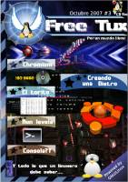
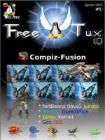

Esta página contiene enlaces a los números publicados de la revista Free Tux en 2007.
Página web: Revista Free Tux
Número 4 - 2007 noviembre
Descarga (PDF 15.4 MB español)

Número 3 - 2007 octubre
Descarga (PDF 10.9 MB español)
Número 2 - 2007 septiembre
Descarga (PDF 2.2 MB español)

Número 1 - 2007 agosto
Descarga (PDF 3.5 MB español)